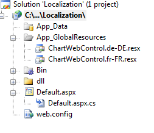
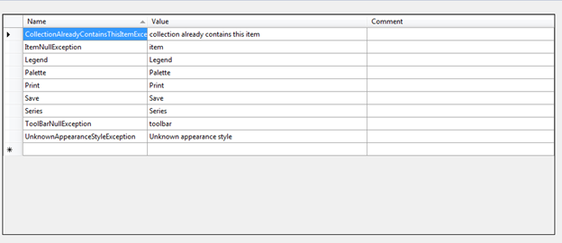
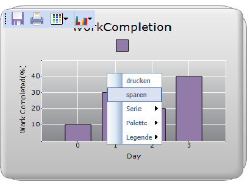

Localization allows a chart to display data according to the language and culture specific to a particular country or region.
Essential Chart now supports localization; built-in resource files for specific languages can be easily added. Context menu items, exception messages, and some of the toolbar items can be localized.
Use Case Scenario
This enables you to localize any part of the chart that has static strings in it.
Properties
|
Property |
Description |
Type |
Data Type |
Reference links |
Dependencies |
|
Localize |
Get or set the localization culture of Grid. |
Server side |
A string containing the name of the target System.Globalization.CultureInfo |
NA |
NA |
|
LocalizationPath |
Get or set the localization resource path of the resource file location. |
Server side |
Any string value. Default : “~/App_GlobalResources” |
NA |
Localize |
Adding Localization to an application
1. Create a folder called App_GlobalResources in the application folder and create your localization resource file (.resx) inside this folder with the following naming convention:
· ChartControl.<your culture info name>.resx
Note: It is mandatory to follow this naming convention.

Figure 321: App_GlobalResources Folder
2. Enter the UI name in the Name column and the equivalent term you want in the Value column of the resource file.

Figure 322: Default English resource file
Note: It is mantatory to specify equivalent terms for all static element to localize the chart.
3. Specify the culture using the Localize property as given in the following code:
|
[C#] this.ChartWebControl1.Localize=”de-DE”; |
|
[VB] Me.ChartWebControl1.Localize=”de-DE”
|
4. Specify resource file from your local resource file directory.
|
[C#] this.ChartWebControl1.LocalizationPath = "~/App_LocalResources"; |
|
[VB] Me.ChartWebControl1.LocalizationPath = "~/App_LocalResources" |

Figure 323: Localized Chart
Sample Link
To view a sample
1. Open the Syncfusion Dashboard.
2. Select User Interface > Windows Forms.
3. Click Run Samples.
4. Navigate to Culture Localization >Localization sample.
You can find the resource file for the localization in English at the following location: